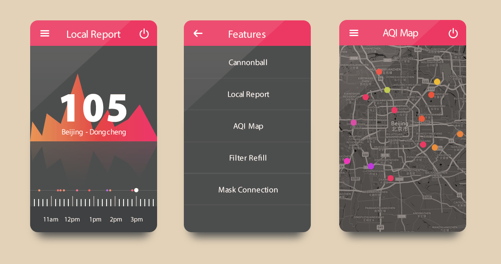
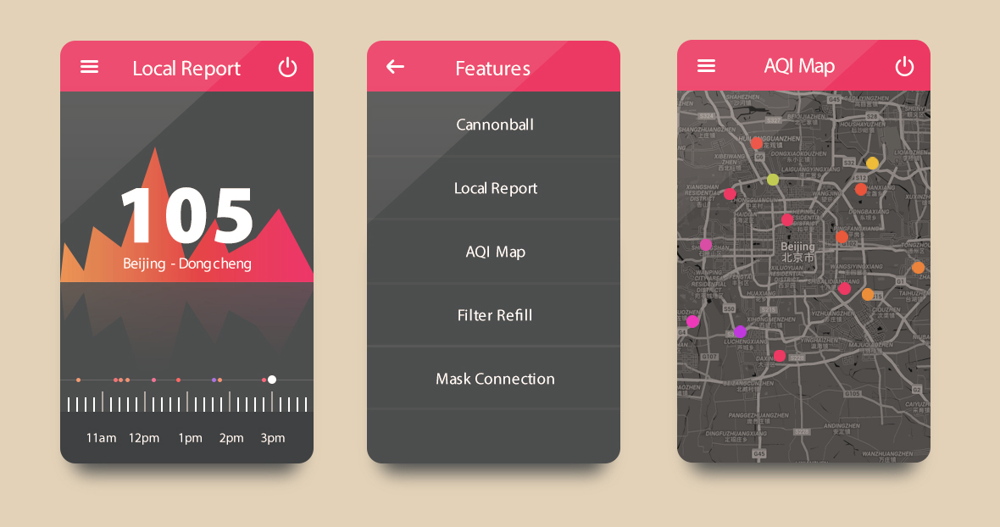

Ted Patterson
Ted Patterson
Smart Air
Who needs clean, affordable air?
Smart Air is a small social enterprise that promotes DIY air filters as a low-cost solution to indoor particulate air pollution in China and India.

Type
Full-time position
Roles
Graphic designer (UX/UI, brochure, poster, warning label, business card, advertisement, etc.), product photographer, videographer, video editor, project management, R & D specialist, PR rep, and workshop organizer / promoter.
Timeline
May 2013 – July 2015
The Big Picture
In January 2013, PhD student Thomas Talhelm wondered why air purifiers cost so much. He bought a HEPA filter on Taobao, strapped it to a simple fan, bought a particle counter, ran some tests, and published the results on a blog he called Particle Counting.
A few magazines wrote about Thomas's "rediscovery," and then the Beijing Energy Network suggested he lead DIY workshops to help other concerned Beijingers build their own.
When people said they had trouble finding the right type of fan and a trustworthy HEPA, Thomas and his friends Gus and Anna decided to launch Smart Air in September 2013 to ship fans and the best HEPAs they could find to people all over China.
The team believes that if more people saw our opensource data and testing, more people would know that clean air doesn't have to cost thousands of RMB.
“Filters are actually very simple -- a HEPA filter is all you need to get over 99 percent of the PM 2.5 ”
Kicking Things In Gear
In the summer of 2013 I came in contact with a funny guy named Gus Tate that happened to be leading an initiative in Beijing to educate people on the production and effectiveness of low-cost, DIY air purification alternatives. I jumped at the chance to volunteer and I quickly fell into place helping Smart Air streamline mostly all of their company assets. After all was said and done, I was able to improve the look and function of their marketing materials, Taobao storefront UX/UI design, educational pamphlets, product photos, promotional test videos, business card designs, workshop posters and many other assets so that the startup was able to better transition into what it is now.
I was very lucky to have crossed paths with the Smart Air team and, because of my experiences with them, I am better prepared to work with startups/companies (no matter their size, location, or native tongue) and understand what I am capable of in environments of varying levels of pressure, experience, and opinion.

My first projects at Smart Air were focused in on print media. While I was focused on this I was able to develop a good collection of posters, pamphlets, handouts, infographics, product booklets, pop-up banners, warning labels, and whole bunch of other elements.
After standards were set, I started to look over our reserve and tried to refine the look / feel of the overall brand. In this period, I was tasked with running a campaign to find a new logo and product exteriors for the company and after lots of back and forth with the team, a teammate and I developed a few logos that met our requirements.


On top of everything mentioned, I was also tasked with updating our product catalog and photography. So I changed hats, yet again! I rent a camera and lighting gear or hired a freelance photographer, from time to time, and made sure that our units, despite the fact that they were budget, do-it-yourself products looked clean and cool. In addition, I also filmed and edited several promotional videos for Smart Air. These were used for social media and general education purposes.
Web development & mobile projects
While I was with Smart Air I was tasked with streamlining a few of our online components. In specific, I was able to work on our e-commerce site and help our users access / understand our complex (and at times boring) test data. Through a simple system of icons, colors, and shape cues I was able to show users were to go, with out the use of text. In addition and before my departure from the group, I started developing a mobile app that was to be used in conjunction with a Smart Air branded filter.


In preparation for our Taobao overhaul, I dove into mobile and destop UX/UI articles spread across the web. This information provided me a great deal of insight as to where web experiences were headed, but, in the end, it help me pinpoint which direction we needed to go. I wanted to make it extremely easy for people to find their way while cruising down the page, so I decided to color code all of the different categories and denominate each section with a descriptive icon.

 

Finally and before I made my way back to the U.S., I had the oppotunity to follow up on my mobile app and web experiences research by trying to develop mockups and some basic mobile apps. It never left the prototyping phase, but I'm somewhat eager to back track and revist this project. It was supposed to be a remote application for a Smart Air branded air purifier, but repurposing it and using the parts to create a trendy, accessible AQI app would be just as good, too.
Looking back
Working with this team was a very demanding and passionate endeavor. All of us were in it to make a difference and at the end of the day, I'm glad I took on the challenge to improve what I could, while I was in Beijing. I mean, there's not many moments that I can look back on and say "I was responsible for helping, improving, or saving millions (possibly billions) of Chinese, Indian, and expat lives."
On top of this, through the work that you've seen listed here and those unlisted, I was provided with a lens that helps understand what it means to budget your time, resources, and capitol while running a startup. Every project that I've taken on has called on the failures and successes of this team and I have no doubt that I am exponentially better because of this.